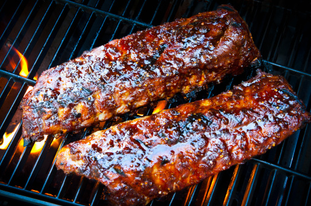

Ribs

Ribs slathered in barbecue sauce
These delicious ribs are perfect for anytime! Don't wait for summer to come
along to chow down on these delectable ribs. These will be slow cooked and can
be done in the oven or on a smoker. Perfect for your party or parley.
- 2 lbs ribs
- Memphis dust
- Kosher salt
- 1 cup of water
- Pat dry the ribs with a paper towel
- Remove the silverskin by cutting under membrane enough to get a grip with a paper towel and tear off
- Moisten then rib surface with a little bit of water
- Generously apply the Memphis Dust rub coating evently
- Place in smoker or oven and cook at 225-250 F for about 3 hours
- Wrap the ribs in aluminum foil and cook for an additional 2 hours
- Remove the foil and cook for another hour or until testing the ribs by bending to see if they break apart